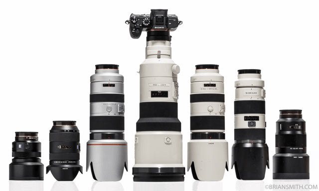
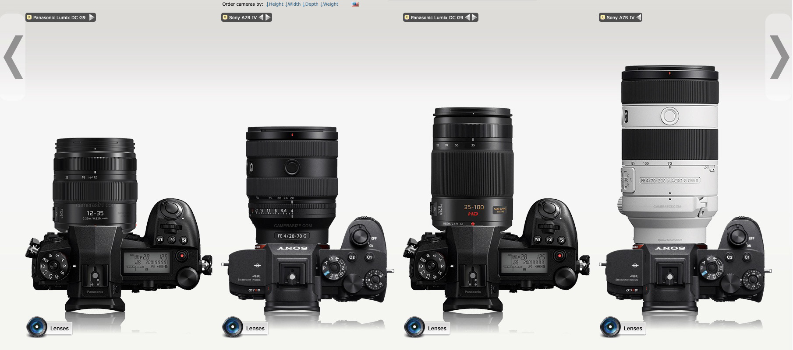
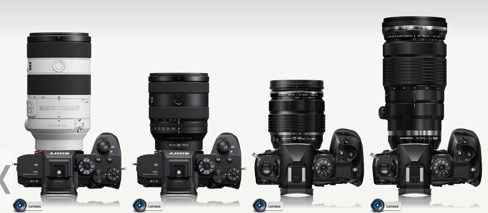
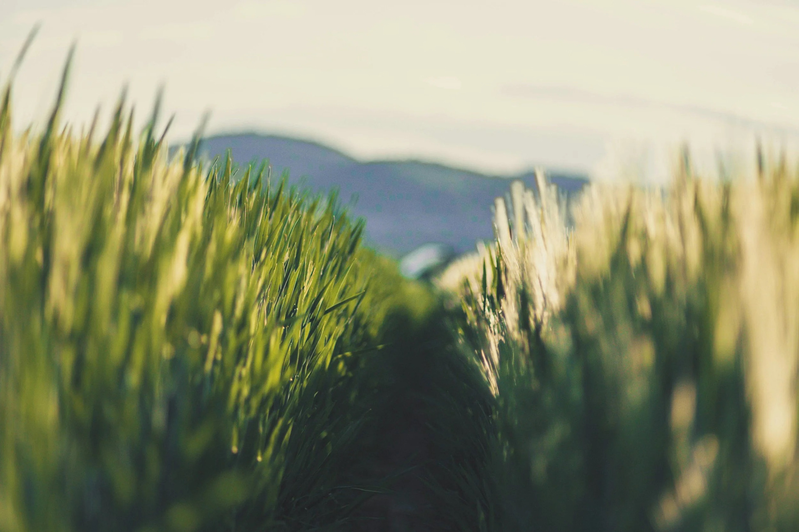
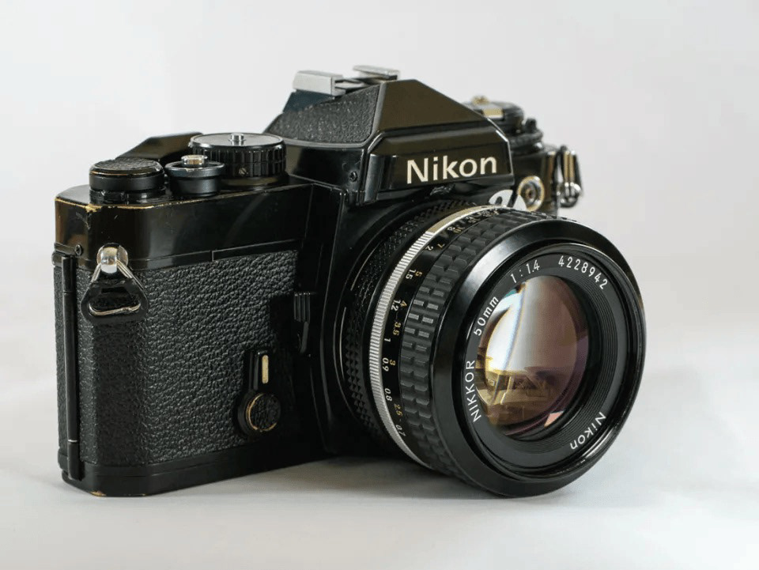
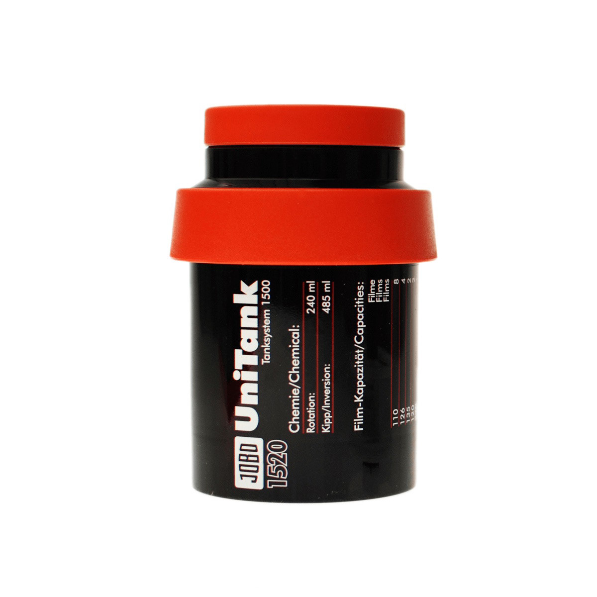
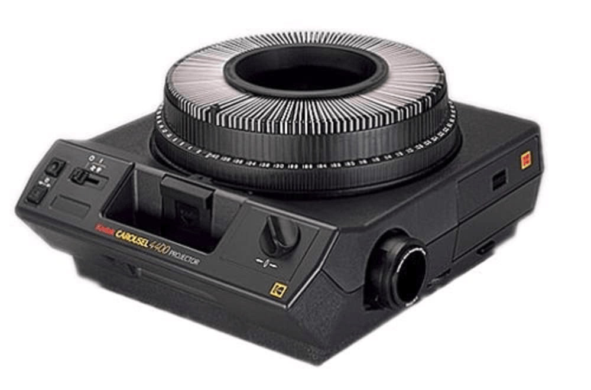

Phone or Camera
In March 2025 I shot my Granddaughter's first birthday entirely on my iPhone. The image quality is nearly identical to my m43 system in good light, and it was a full blown daylight (got a nice tan in the process). I could even shoot RAW and get DNGs to edit in Lightroom if I want. Of course there is no match when you need more reach, or shoot in lower light, but for a regular daytime photo shoot, there was no point in lugging around a camera body and multiple lenses, for almost no image quality gain.
In April 2025 I decided it was time to start moving into a system that will provide more flexibility, improved support, research and development, and also widely available for resale. So the Sony Alpha system made a lot of sense. For far too long I've been researching the system, only to get disappointed every time I looked at the price, size, and weight. Until I saw this kit which completely changed my mind.

Equivalent lenses, MFT versions are f:2.8, and Sony Alpha are f:4, but are equivalent in depth of field rendering. Besides, the extra stop is very well handled as the Sony full frame sensor manages noise at high ISOs surprisingly well.
Thoughts of Change
My thought process swarmed around my head, and began looking into different options. Sony clearly won, so started selling most of my old gear, and get the A7R IV plus 3 lenses and a Teleconverter. It can easily cover from 20mm up to 420mm.
I would have gone for the A7R V, although I'm not ready to spend that kind of money on a camera until I start getting paid jobs. Besides the V has exactly the same sensor as the IV, so image quality will be almost the same. It has an improved EVF, AI assited AF and better IBIS, but I think I can survive with the IV for a couple years. By that time, the VI should have been released, and the price of used Mark V should have gone down considerably.

This comparison is more balanced, as the OM Systems lenses are of similar quality, and while the 40-150 will render a 80-300 equivalent field of view at 20 Megapixels, the Sony 70-200 can reach up to 280mm using APS-C mode, and still render a 26 Megapixel file.
The 61 Megapixel sensor provides room for cropping, and still get a usable image. It has an APS-C mode, which I configured to a function button. I just press it and it multiplies the field of view 1.5 times, still getting a 26 Megapixel file, which is more that what any MFT body can provide.
In APS-C mode, my 70-200mm will become a 90-280mm, still f:4, and if I add the 1.4X teleconverter, I can get to up to 420mm at f:5.6.
Did the Kit grew or shrunk?
My fear about Full Frame was the cost, size and weight of the kit. Not so much the camera body, as is similar, and even smaller than flagship micro 4/3s bodies, but the lenses. Specially the longer ones. And while they are indeed bigger, heavier and considerably more expensive than MFT equivalents, you can now find way smaller and lighter lenses. The 20-70mm + 70-200mm combo is a match made in heaven. They even share the same filter size, and constant aperture.
So, my former kit was:
- G9/G95/GX9
- 12-35mm f:2.8
- 8-18mm f:2.8-4
- 12-60 f:2.8-4 (for single lens travel)
- 12-60 f:4-5.6 (for light travel)
- 35-100mm f:2.8
- 9mm f:1.7
- 15mm f:1.7
- 25mm f:1.4
- 45-200mm f:4-5.6
Basically 6 zooms, 3 primes, and 3 camera bodies. Impossible to carry all on a trip. I had to decide what I “expected” to see while away. Most of the time I missed leaving one of the lenses at home.
This kit covered from 16mm to 400mm at 20 Megapixels.
My new Sony kit is:
- Sony A7R IV
- 20-70mm f:4
- 70-200mm f:4
- 35mm f:2.8
- 1.4X TC
That's it. One body, one prime, two zooms and a teleconverter covering from 20mm to 420mm. 4mm shy on the wide end, and 20mm more reach compared with the MFT kit.
Contrary to all my expectations, my kit shrunk. Considerably.
Am I really that bad about gear choice?
A person I had an exchange with on YouTube recently accused me of being disorganized, undisciplined, and of carrying what he called a “hoarder kit” when I used Micro Four Thirds. According to him, my kit did not really shrink because of the format change; it only shrank because I finally learned “gear discipline.” He argued that if I had simply carried one G9 and a couple of zoom lenses, my Micro Four Thirds setup would have been smaller and lighter than my current Sony full-frame kit.
And yes, on paper, that is technically true.
If I had carried only one Micro Four Thirds body and two slow or moderately fast zooms, the kit would have been smaller. But that misses the entire point of why I carried multiple bodies and lenses in the first place.
My Micro Four Thirds kit grew because I was constantly trying to compensate for the system’s limitations in the way I shoot. I wanted better low-light performance, more subject separation, better dynamic range, better autofocus, and more flexibility. That meant adding faster primes, better zooms, backup bodies, specialized lenses, and combinations that allowed me to work around the compromises I kept running into.
The irony is that the so-called “discipline” came after switching systems, because full frame allowed me to simplify. I no longer felt the same need to carry several overlapping options to cover every weakness. One high-resolution body and a small number of carefully chosen lenses gave me the flexibility, image quality, cropping room, and depth-of-field control I was looking for.
So no, the point is not that any full-frame kit is automatically smaller than any Micro Four Thirds kit. That would be absurd. A minimalist Micro Four Thirds kit can absolutely be smaller and lighter. The point is that my real-world Micro Four Thirds kit was not smaller, because the system pushed me toward carrying more gear to get the results I wanted.
For my photography, the move to full frame did not make me carry more. It made me carry less.
That is the part that pure spec-sheet comparisons often miss. The smallest theoretical kit is not always the most useful kit. The best system is not the one that wins a size chart; it is the one that lets you do the work you want with the fewest compromises.
The reality of Depth of Field
I remember my film days, constantly playing with aperture to control depth of field — the distance between the closest and farthest objects that still appear acceptably sharp.
With Micro Four Thirds, I got lazy.
There was often little reason to stop down, because shooting wide open at f/3.5 or f/4 already gave me enough depth of field for most subjects. Landscapes were a different story, but even then, instead of stopping down to f/11 or f/16 to keep the foreground and background in focus, I usually relied on focus stacking to avoid diffraction. In practice, I rarely moved the aperture away from wide open.
Then I realized something important: my most cherished lenses, the Panasonic 12-35mm f/2.8 and 35-100mm f/2.8, were giving me the depth of field of roughly f/5.6 in full-frame terms.
That explained a lot.
It explained why getting “sharp” images felt easier. It also explained why my transition to full frame initially felt less forgiving. I had carried over the habit of shooting wide open, but now wide open actually behaved like wide open again.

Eureka moment
Aha.!!!
So that is why my shots were so sharp all the time.
For years, I thought, My goodness, these lenses are amazing. And they are. I still believe that. But in many situations, it was not only the lens doing the work. It was also the depth of field.
Everything looked tack sharp because even when I missed focus slightly, the subject often still fell within the wider depth of field. Micro Four Thirds was simply more forgiving.
Full frame is nowhere near as forgiving.
But I still love M43
This is not a rant against Micro Four Thirds. Far from it. I used the system for well over 13 years, and I still have a lot of affection for it. If there was any misunderstanding on my part about aperture, depth of field, and how those translated between systems, that responsibility is mine.
Micro Four Thirds has a huge advantage when you need long reach and generous depth of field. That is one of the main reasons it remains so popular among wildlife and BIF photographers. For birds in flight, wildlife, travel, and situations where reach matters more than shallow depth of field, the system makes a lot of sense.
But I am not primarily a wildlife or BIF photographer.
And that realization changed the way I saw my gear choices. It was not that Micro Four Thirds was bad. It was that, for the type of photography I enjoy most, I may have been using the wrong format.
I am not complaining, though. I loved Micro Four Thirds, and in many ways, I still do. I hope the system continues to thrive. Sadly, looking at the latest releases, I am not fully confident that Panasonic remains as committed to the format as it once was. OM System has a clearer path, because Micro Four Thirds is central to its identity, and it makes sense for them to focus heavily on wildlife, birding, and outdoor photography.
Panasonic, however, seems increasingly invested in full frame and the L-Mount alliance. That may be the right business decision for them, but as someone who spent 13 years with Micro Four Thirds, it is difficult not to feel that the system is no longer receiving the same level of attention it once did.
3:2 a familiar aspect ratio
The final reasoning why Full Frame makes sense to me is that it feels like home.
Way back in September 1977 my brother bought me my first SLR. A Nikon FE. I used Nikon ever since, up to the mighty F100 which I loved with all my heart. Most comfortable camera I have ever owned.
The 3:2 aspect ratio is wider than 4:3, so is less "boxy”. I find myself sometimes cropping 4:3 into 3:2. I find it more aesthetically pleasing than 4:3. Suits better my preferred subject: Landscape. My Granddaughter is close 2nd. But very close.


A Family Tradition
I shot Slide film almost exclusively for almost 30 years. I even owned a darkroom at home, printed and developed reversal film, even did Cybachrome, amazing media.
On later days, our typical weekend was to go out on a Saturday with the family, to an interesting place around the city, or maybe to the beach, with my camera and a couple rolls of slide film. Then Sunday afternoon, after lunch, I turned on the JOBO development tank system to bring it to the right temperature. Cracked open the cartridges in a light proof bag, and fed the film into the reels of a JOBO UniTank. Started the development process: first developer, reversal, color developer, bleach, wash and stabilizer. I still remember the scent of E-6 chemicals.
After drying and cutting the strips of film I mounted them on slide frames. Loaded the slides into a Kodak Carrousel, and at dawn, it was family time to watch the 72 photos I captured over the weekend. We used to live in a country house, with no Cable or Internet, so it was so relaxing and amazingly fulfilling to sit down for a few minutes and enjoy "the catch of the weekend” with the family.
It might be the reason why I miss the 3:2 aspect ratio of the 35mm frame so much.

The Death of a Legacy
In 2002 my F100 died with an Err in the screen, and no way to repair it. So I stopped photography for good. It was my last SLR. In 2005 I got my first DSLR, the first Canon Digital Rebel. Basically the only “affordable” DSLR at that time.